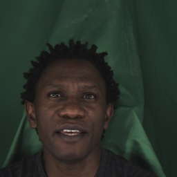
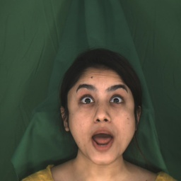
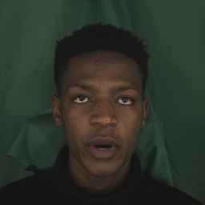
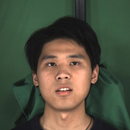

Abstract
Vision-Driven Text-to-Speech aims to generate style-matched speech based on input reference images. Although existing methods can leverage facial images to control speech style, they struggle to fully capture the multi-scale characteristics of facial expressions as well as the fine-grained interactions between emotional features and textual content. To address this challenge, we propose a novel multimodal speech synthesis framework, MSE-TTS. First, we design a Multi-Scale Vision Emotion Encoder to capture richer emotional details. A dual- supervision strategy combining classification and contrastive losses is introduced to enhance feature discriminative power. Sec- ond, we introduce an Emotion-Text Fusion Module that employs abidirectional attention mechanism to achieve deep interaction between emotion vectors and text sequences. Experimental results demonstrate that MSE-TTS outperforms existing baseline models in both naturalness and emotional expressiveness of synthesized speech.
Emotion Controlling Based On Image Prompt
 |
Only lawyers love millionaires. | |||||
| The small boy put the worm on the hook. | ||||||
|  | His superiors had also preached this saying it was the way for eternal honor. | |||||
|  | Grandmother outgrew her upbringing in petticoats. | |||||
| Kindergarten children decorate their classrooms for all holidays. | ||||||
|  | Call an ambulance for medical assistance. | |||||
|  | The eastern coast is a place for pure pleasure and excitement. |